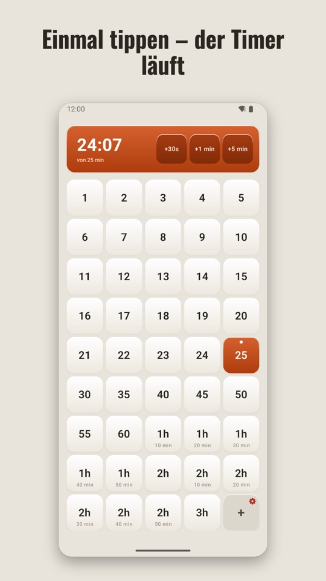
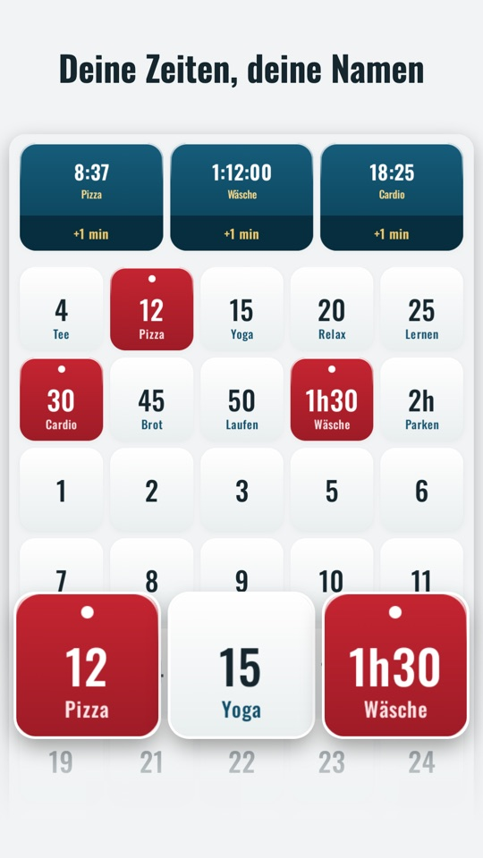
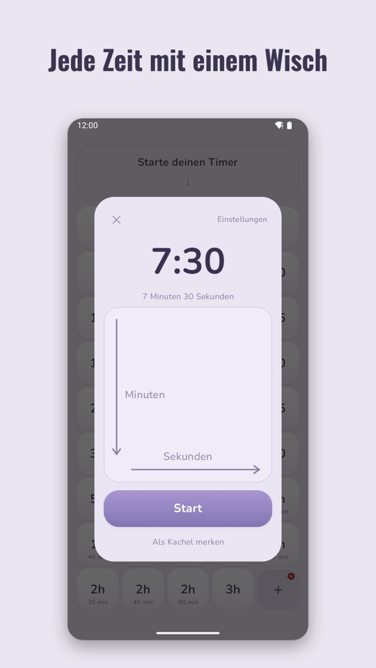
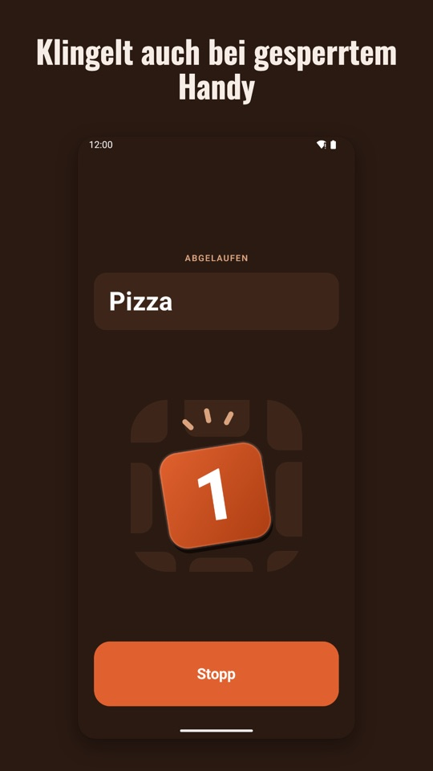
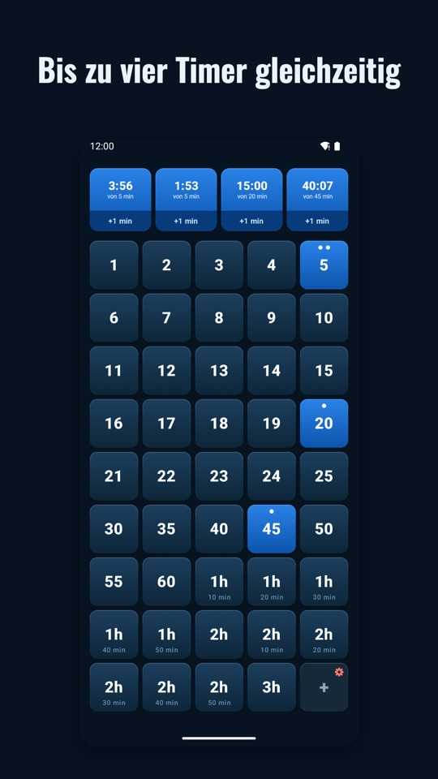
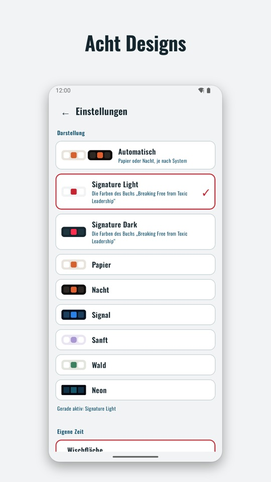
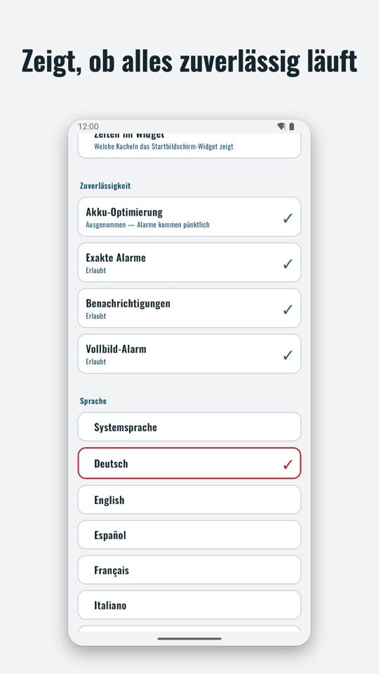

Einmal tippen. Der Timer läuft.
Zeit antippen, Countdown läuft. Ohne Einrichtung, ohne Werbung, ohne Aufräumen. Für die Wäsche, das Brot im Ofen, das Training, die Pause, das Parkticket.
Demnächst bei Google PlayOne Timer ist gerade im geschlossenen Test und bald für alle verfügbar.
Was One Timer anders macht
Einmal tippen genügt
45 Zeitkacheln von 1 Minute bis 3 Stunden. Tippe auf eine Zeit, und der Timer läuft. Kein Einstellen, kein Bestätigen, kein Start-Knopf.
Mehrere Timer
Bis zu vier laufen gleichzeitig. Zweimal dieselbe Kachel, zwei eigene Timer.
Verlässlicher Alarm
Klingelt bei gesperrtem Handy, im Lautlos-Modus und nach einem Neustart. Im Vollbild über dem Sperrbildschirm, auf Wunsch mit Ansage, welcher Timer abgelaufen ist.
Nichts aufräumen
Abgelaufene Timer verschwinden von selbst. Mehrere abgelaufene Timer ergeben einen Alarm mit einem Stopp-Knopf.
Deine Zeiten, deine Namen
Lange drücken, um eine Kachel zu ändern oder zu benennen: „Wäsche“, „Parken“, „Pause“. Krumme Zeiten wie 7:30 mit einem Wisch.
Ohne Werbung, ohne Konto, ohne Internet
One Timer hat keinen Internetzugriff und sammelt keine Daten. Acht Designs, acht Sprachen, ein Widget für den Startbildschirm.
So sieht es aus







Wenn ein Alarm nicht pünktlich klingelt
Manche Hersteller beenden Apps im Hintergrund, um Akku zu sparen. Dann kann ein Alarm bei gesperrtem Display ausbleiben. One Timer zeigt unter + → Einstellungen → Zuverlässigkeit, ob alles passt, und führt direkt zur richtigen Stelle. Je nach Gerät braucht es zusätzlich:
- Samsung: Einstellungen → Akku → Hintergrund-Nutzungslimits → One Timer zu „Nie schlafende Apps“ hinzufügen.
- Xiaomi: In der App-Info „Autostart“ einschalten und unter „Akkusparmodus“ „Keine Einschränkungen“ wählen.
- OnePlus/Oppo: In der App-Info unter „Akku“ „Hintergrundaktivität erlauben“ und „Autostart“ einschalten.
- Huawei/Honor: Unter „App-Start“ One Timer auf manuell stellen und alle drei Schalter einschalten.
- Vivo: Unter „Akku“ → „Hoher Hintergrundverbrauch“ One Timer erlauben.
Fragen oder Wünsche?
Schreib mir: markus@toxicleadership.info